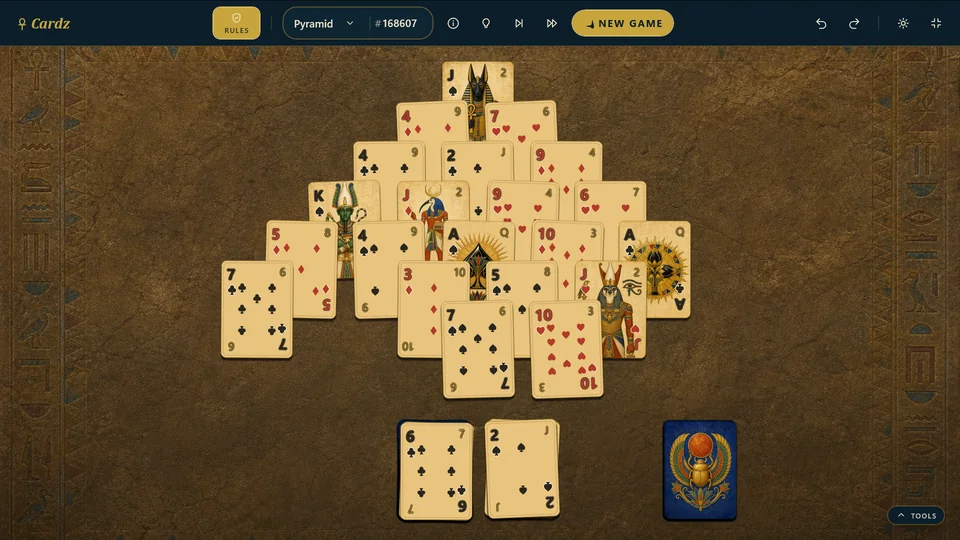

Cualquier control
Táctil, lápiz, ratón o teclado.
Solitario para Windows
Juega los clásicos según las reglas, desactiva las reglas cuando quieras, o empieza con una baraja sin más e inventa un juego tuyo.

Juegos

Parejas que suman trece
Baraja Scarab
Todas las cartas a la vista
Baraja Deepfield
Mueve colas enteras de una vez
Baraja Filigree
Dieciocho abanicos, dos repartos más
Baraja Olympus
La primera carta marca el ritmo
Baraja Herbarium
Deshaz el tejido
Baraja ValhallaBarajas
Cambia cuando quieras, incluso a mitad de partida.
Sandbox
Una mesa y una baraja. Mueve las cartas a donde quieras e inventa un juego sobre la marcha.

Táctil, lápiz, ratón o teclado.
Cierra la aplicación. La partida sigue ahí cuando vuelves.
¿Atascado? Pide una. O desactiva las reglas y mueve cualquier carta.
Alto contraste, una baraja apta para daltónicos, movimiento reducido, narración para lectores de pantalla y juego completo con el teclado.